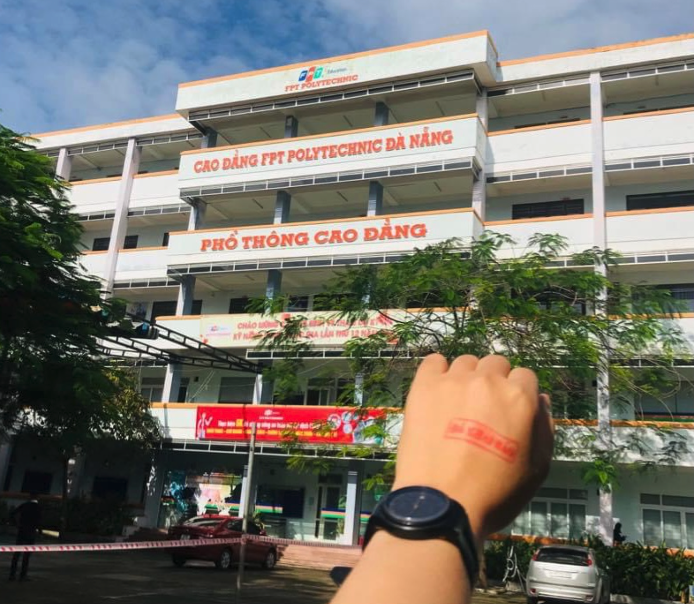
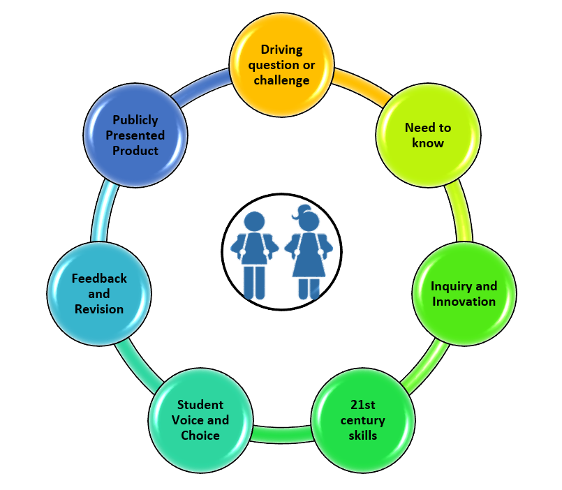

<div class="container my-5" id="content">
<div class="col" style="">
        
    FPT Polytechnic là gì?<br>
    Trường Cao đẳng FPT Polytechnic là trường Cao đẳng trực thuộc Tổ chức Giáo dục FPT (FPT Education)
<div class="col"></div>
<div class="">
    Hoàn thành khóa học của FPT Polytechnic sẽ được nhận bằng cấp gì?<br>

    Sinh viên khi hoàn thành khóa học 7 học kỳ (2 năm 4 tháng không có nghỉ hè) của FPT Polytechnic sinh viên sẽ
    nhận
    bằng
    Cao đẳng chính quy tập trung do Trường Cao đẳng FPT Polytechnic cấp theo quy định của Tổng cục dạy nghề, Bộ
    Lao động
    thương binh và xã hội.
    <br>
</div>
<div class="">Trường đào tạo theo phương pháp “project-based-training”, đó là gì vậy?<br>

    “Project- based-training” hay “đào tạo theo dự án” là phương pháp đào tạo tiên tiến dựa trên thực tiễn. Theo
    đó,
    sinh
    viên sẽ được biết mục đích học tập của mỗi môn học (case study), học kỳ (project) tại đầu môn học. Quá trình
    học tập
    là
    quá trình tìm tòi, học hỏi để giải quyết vấn đề. Phương pháp này khác với các phương pháp thụ động tiếp thu
    để cuối
    cùng
    mới biết mình sẽ giải quyết vấn đề gì. Phương pháp đào tạo theo dự án nhằm làm tăng tính trải nghiệm dựa
    trên mô
    phỏng
    thực tế công việc.</div>
<div class="col-3">
</div>
<br>
<div class="">
    Giáo trình, tài liệu học tập và phòng thực hành của trường được sử dụng như thế nào?
    <br>
    Sách giáo trình của trường được xây dựng dựa trên sự hợp tác với các nhà xuất bản uy tín như McGraw Hill,
    Pearson,
    Wiley… Sinh viên cần mua sách để học tập vào đầu mỗi học kỳ theo giá ưu đãi. Ngoài ra, các sách tham khảo
    sinh viên
    có
    thể đọc tại thư viện.

    Trường có phòng máy thực hành để hỗ trợ học tập cho sinh viên theo giờ học chính khóa. Nếu phòng máy rảnh,
    sinh viên
    có
    thể đăng ký để sử dụng máy tính ngoài giờ hoàn toàn miễn phí.
</div>
<p class="lead">
  <a class="btn-lg bg-danger text-white " href="" role="button" style="text-decoration: none; float: right;">Xem
    thêm...</a>
</p>

</div>
</div>